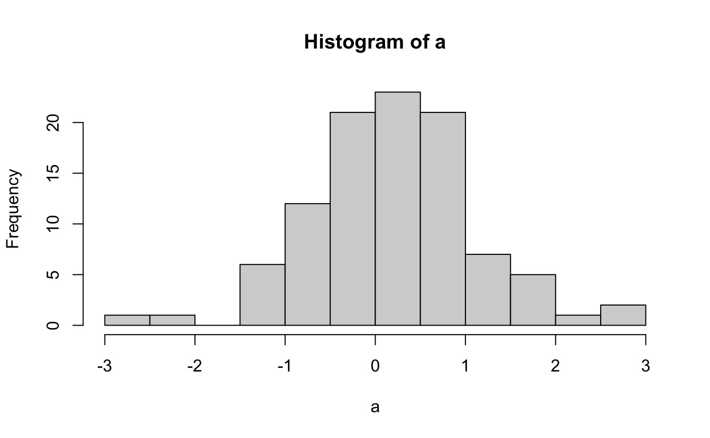
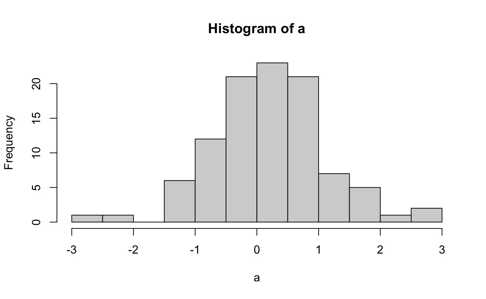

Code
# On tire des valeurs au hasard
a <- rnorm(100)
3 + 5[1] 8Code
hist(a)
Ce livre contient l’ensemble du matériel (contenus, exemples, exercices…) nécessaire à la réalisation des travaux pratiques de Biométrie de l’EC ‘Outils pour l’étude et la compréhension du vivant 2’ du semestre 3 de la licence Sciences de la Vie de La Rochelle Université.
# On tire des valeurs au hasard
a <- rnorm(100)
3 + 5[1] 8hist(a)
Les trois grands chapitres de ce livre correspondent aux 3 objectifs principaux de ces séances de TP et TEA :
Vous faire découvrir les logiciels R et Rstudio dans lesquels vous allez passer beaucoup de temps en licence puis en master. Si vous choisissez une spécialité de master qui implique de traiter des données (c’est-à-dire à peu près toutes les spécialités des Sciences de la Vie !) et/ou de communiquer des résultats d’analyses statistiques, alors R et RStudio devraient être les logiciels vers lesquels vous vous tournerez naturellement.
Vous apprendre à faire des graphiques de qualités dans RStudio et vous faire prendre conscience de l’importance des visualisations graphiques :
À l’issue de ces TP et TEA, vous devriez donc être suffisamment à l’aise avec le logiciel RStudio pour y importer des données issues de tableurs, les manipuler pour les mettre dans un format permettant les représentations graphiques, et pour produire des graphiques pertinents, adaptés aux données dont vous disposez, et d’une qualité vous permettant de les intégrer sans honte à vos compte-rendus de TP et rapports de stages.
D’ailleurs, les données que vous serez amenés à traiter lors de vos stages, ou plus tard, lorsque vous serez en poste, ont souvent été acquises à grands frais, et au prix d’efforts importants. Il est donc de votre responsabilité d’en tirer le maximum. Et ça commence toujours (ou presque), par la manipulation de données dans RStudio et réalisation de visualisations graphiques parlantes.
Dernière choses : à partir de maintenant, tous les compte-rendus de TP que vous aurez à produire dans le cadre de la licence SV devront respecter les bonnes pratiques décrites dans ce document. En particulier, les collègues de l’équipe pédagogique attendent en effet que les graphiques que vous intégrerez à vos compte-rendus de TP soient systématiquement produits dans RStudio.
Les travaux pratiques et TEA de biométrie auront lieu entre le 12 septembre et le 07 octobre 2022 :
Tous les TP ont lieu en salle MSI 217. Tous les TEA sont à distance.
Au total, chaque groupe aura donc 4 séances de TP et 2 séances de TEA. C’est très peu pour atteindre les objectifs fixés et il y aura donc évidemment du travail personnel à fournir en dehors des heures prévues à l’emploi du temps. Pour chaque séance de TP ou TEA prévue à l’emploi du temps, j’estime qu’une à deux heures de travail personnel est nécessaire (soit 9 à 15 heures au total, selon votre degré d’aisance, à répartir sur 4 semaines). Attention donc : pensez bien à prévoir du temps dans vos plannings car le travail personnel est essentiel pour progresser dans cette matière. J’insiste sur l’importance de faire l’effort dès maintenant : vous aller en effet avoir des enseignements qui reposent sur l’utilisation de ces logiciels à chaque semestre de la licence du S3 au S6. C’est maintenant qu’il faut acquérir des automatismes, cela vous fera gagner énormément de temps ensuite.
Pour suivre cet enseignement vous pourrez utiliser les ordinateurs de l’université, mais je ne peux que vous encourager à utiliser vos propres ordinateurs, sous Windows, Linux ou MacOS. Lors de vos futurs stages et pour rédiger vos comptes-rendus de TP, vous utiliserez le plus souvent vos propres ordinateurs, autant prendre dès maintenant de bonnes habitudes en installant les logiciels dont vous aurez besoin tout au long de votre licence. Si vous ne possédez pas d’ordinateur, manifestez vous rapidement auprès de moi car des solutions existent (prêt par l’université, travail sur tablette via RStudio cloud…).
L’essentiel du contenu de cet enseignement peut être abordé en autonomie, à distance, grâce à ce livre en ligne, aux ressources mises à disposition sur Moodle et à votre ordinateur personnel. Cela signifie que la présence physique lors de ces séances de TP n’est pas obligatoire.
Plus que des séances de TP classiques, considérez plutôt qu’il s’agit de permanences non-obligatoires : si vous pensez avoir besoin d’aide, si vous avez des points de blocage ou des questions sur le contenu de ce document, sur les exercices demandés ou sur les quizz Moodle, alors venez poser vos questions lors des séances de TP. Vous ne serez d’ailleurs pas tenus de rester pendant 1h30 : si vous obtenez une réponse en 10 minutes et que vous préférez travailler ailleurs, vous serez libres de repartir !
De même, si vous n’avez pas de difficulté de compréhension, que vous n’avez pas de problème avec les exercices ou les quizz Moodle, votre présence n’est pas requise. Si vous souhaitez malgré tout venir en salle de TP, pas de problème, vous y serez toujours les bienvenus.
Ce fonctionnement très souple a de nombreux avantages :
Toutefois, pour que cette organisation fonctionne, cela demande de la rigueur de votre part, en particulier sur la régularité du travail que vous devez fournir. Si la présence en salle de TP n’est pas requise, le travail demandé est bel et bien obligatoire ! Si vous venez en salle de TP sans avoir travaillé en amont, votre venue sera totalement inutile puisque vous n’aurez pas de question à poser et que vous passerez votre séance à lire ce livre en ligne. Vous perdrez donc votre temps, celui de vos collègues, et le mien. De même, si vous attendez la 4e semaine pour vous y mettre, vous irez droit dans le mur. Je le répète, outre les 9h de TP/TEA prévus dans vos emplois du temps, vous devez prévoir entre 9 et 15 heures de travail personnel supplémentaire.
Je vous laisse donc une grande liberté d’organisation. À vous d’en tirer le maximum et de faire preuve du sérieux nécessaire. Le rythme auquel vous devriez avancer est présenté dans la partie suivante intitulée “Progression conseillée”.
Outre les séances de permanence non-obligatoires, nous échangerons aussi sur l’application Slack, qui fonctionne un peu comme un “twitter privé”. Slack facilite la communication des équipes et permet de travailler ensemble. Créez-vous un compte en ligne et installez le logiciel sur votre ordinateur (il existe aussi des versions pour tablettes et smartphones). Lorsque vous aurez installé le logiciel, cliquez sur ce lien pour vous connecter à notre espace de travail commun intitulé L2 SV 22-23 / EC outils (ce lien expire régulièrement : faites moi signe s’il n’est plus valide).
Vous verrez que 2 “chaînes” sont disponibles :
R et RStudio devront êtres posées. Problèmes de syntaxe, problèmes liés à l’interface, à l’installation des packages ou à l’utilisation des fonctions, à la création des graphiques, à la manipulation des tableaux… Tout ce qui concerne directement les logiciels sera traité ici. Vous êtes libres de poser des questions, de poster des captures d’écran, des morceaux de code, des messages d’erreur. Et vous êtes bien entendus vivement encouragés à vous entraider et à répondre aux questions de vos collègues. Je n’interviendrai ici que pour répondre aux questions laissées sans réponse ou si les réponses apportées sont inexactes. Le fonctionnement est celui d’un forum de discussion instantané. Vous en tirerez le plus grand bénéfice en participant et en n’ayant pas peur de poser des questions, même si elles vous paraissent idiotes. Rappelez-vous toujours que si vous vous posez une question, d’autres se la posent aussi probablement.Ainsi, quand vous travaillerez à vos TP ou TEA, que vous soyez installés chez vous ou en salle de TP, prenez l’habitude de garder Slack ouvert sur votre ordinateur. Même si vous n’avez pas de question à poser, votre participation active pour répondre à vos collègues est souhaitable et souhaitée. Je vous donc fortement à vous entraider : c’est très formateur pour celui qui explique, et celui qui rencontre une difficulté a plus de chances de comprendre si c’est quelqu’un d’autre qui lui explique plutôt que la personne qui a rédigé les instructions mal comprises.
Ce document est fait pour vous permettre d’avancer en autonomie et vous ne devriez normalement pas avoir beaucoup besoin de moi si votre lecture est attentive. L’expérience montre en effet que la plupart du temps, il suffit de lire correctement les paragraphes précédents et/ou suivants pour obtenir la réponse à ses questions. J’essaie néanmoins de rester disponible sur Slack pendant les séances de TP et de TEA de tous les groupes. Cela veut donc dire que même si votre groupe n’est pas en TP, vos questions ont des chances d’être lues et de recevoir des réponses dès que d’autres groupes sont en TP ou TEA. Vous êtes d’ailleurs encouragés à échanger sur Slack aussi pendant vos phases de travail personnels.
Pour apprendre à utiliser un logiciel comme R, il faut faire les choses soi-même, ne pas avoir peur des messages d’erreurs (il faut d’ailleurs apprendre à les déchiffrer pour comprendre d’où viennent les problèmes), essayer maintes fois, se tromper beaucoup, recommencer, et surtout, ne pas se décourager. J’utilise ce logiciel presque quotidiennement depuis plus de 15 ans et à chaque session de travail, je rencontre des messages d’erreur. Avec suffisamment d’habitude, on apprend à les déchiffrer, et on corrige les problèmes en quelques secondes. Ce livre est conçu pour vous faciliter la tâche, mais ne vous y trompez pas, vous rencontrerez des difficultés, et c’est normal. C’est le prix à payer pour profiter de la puissance du meilleur logiciel permettant d’analyser des données, de produire des graphiques de qualité et de réaliser toutes les statistiques dont vous aurez besoin d’ici la fin de vos études et au-delà.
Pour que cet apprentissage soit le moins problématique possible, il convient de prendre les choses dans l’ordre. C’est la raison pour laquelle les chapitres de ce livre doivent être lus dans l’ordre, et les exercices d’application faits au fur et à mesure de la lecture.
Idéalement, voilà les étapes que vous devriez avoir franchi chaque semaine :
La première semaine (37) est consacrée à l’installation des logiciels, à la découverte de l’environnement de travail, des RProjects, des packages et des scripts. Avant votre deuxième séance, vous devrez être capables de créer un Rproject et un script, de télécharger et d’installer des packages, d’importer des données dans le logiciel, et vous devrez commencer à connaître les types d’objets principaux (vecteurs, facteurs, data.frames et tibbles). Vous devrez effectuer le premier quizz Moodle (attention, ce quizz est à faire seul !).
La deuxième semaine (38) est consacrée à la découverte du package ggplot2. Avant votre troisième séance, vous devrez avoir compris la syntaxe de base permettant de faire toutes sortes de graphiques avec ggplot2. Vous devrez être capables de choisir des graphiques appropriés selon le nombre et la nature des variables dont vous disposez. À ce stade, on ne demande rien de complexe, mais vous devrez, à minima, être capable de faire des barplots, des histogrammes et des nuages de points. Vous devrez effectuer le second quizz Moodle (attention, ce quizz est à faire seul !).
La troisième semaine (39) est consacrée à l’amélioration de la qualité de vos graphiques. Avant votre dernière séance de TP, vous devrez être capable de faire, outre les graphiques de la semaine précédente, des stripcharts, des boites à moustaches (boxplots) et des graphiques en ligne. Vous devrez également être capable de faire des sous-graphiques par catégories (facet()), de choisir un thème et des palettes de couleurs appropriées, et de légender/annoter correctement vos graphiques. Vous devrez effectuer le troisième quizz Moodle (attention, ce quizz est à faire seul !).
La quatrième semaine (40) est consacrée à la manipulation des tableaux de données. Avant la fin de cette semaine, vous devrez être capable de sélectionner des colonnes dans un tableau, de filtrer des lignes, et de créer de nouvelles variables. Vous devrez être capables d’enchaîner correctement les étapes suivantes : ouvrir le logiciel > créer un projet > créer un script > mettre en mémoire les packages utiles > importer des données > mettre en forme ces données > faire un ou des graphiques informatifs et correctement mis en forme. Vous devrez effectuer le quatrième et dernier quizz Moodle (attention, ce quizz est à faire seul !).
Vous serez évalués à 3 niveaux :
Les exercices demandés dans ce document en ligne ne seront ni ramassés, ni notés : ils sont proposés pour que vous puissiez mettre en application les notions récemment apprises et afin d’évaluer votre propre progression et vos apprentissages. Mais tout ce que nous voyons en TP et TEA devra être acquis le jour de la dernière évaluation.
En particulier, je vérifierai que les étapes décrites précédemment sont acquises (ouvrir le logiciel > créer un projet > créer un script > mettre en mémoire les packages utiles > importer des données > mettre en forme ces données > faire un ou des graphiques informatifs et correctement mis en forme) en vous fournissant un jeu de données inconnu que vous devrez importer et mettre en forme dans RStudio afin de produire quelques graphiques informatifs. Cette évaluation aura lieu soit en salle informatique, soit dans le cadre d’un compte-rendu de TP que vous devrez rendre pour un collègue. Si cette modalité est mise en place, je vous en dirai plus en temps utile.